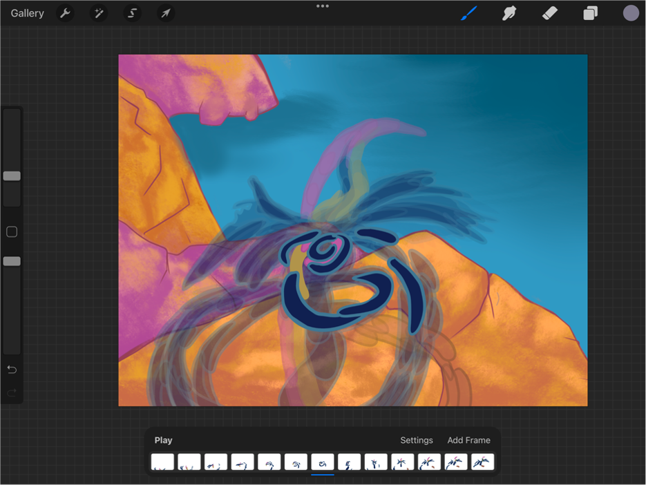

DRAWING

Over the course of this project, I used Adobe Premiere, Procreate, Logic Pro, Audacity, and Adobe Animate.
I hand drew roughly 600 frames and composed original music. Adapting to the medium required extensive research, self-reflection, and
audience testing.